Contents:
Canada,
Sweden,
Australia,
Mexico,
Japan,
Canada
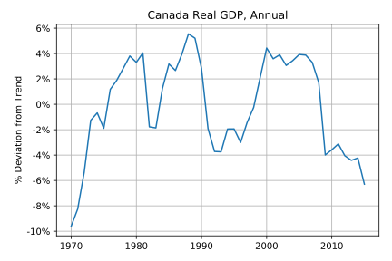
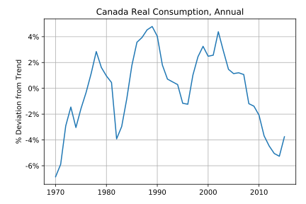
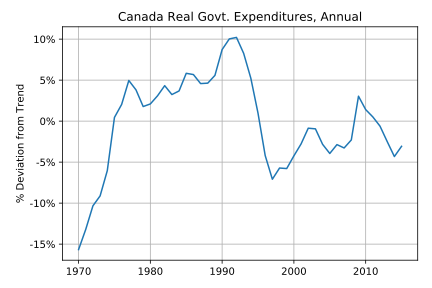
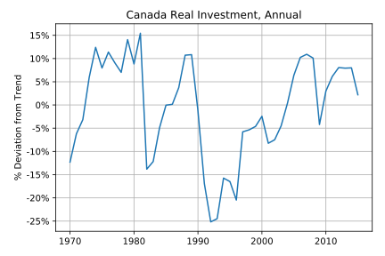
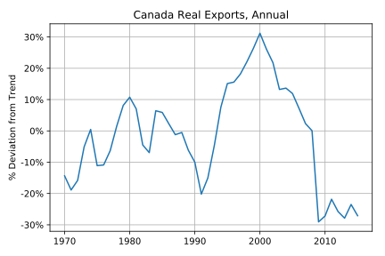
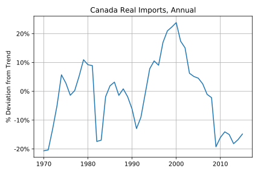
With (data-trend)/trend:
|
Y |
C |
G |
I |
X |
M |
| Standard Deviation: |
0.037171 |
0.029647 |
0.056480 |
0.101223 |
0.167460 |
0.126039 |
| Coorelation with Y component: |
1.000000 |
0.835823 |
0.313145 |
0.422592 |
0.583767 |
0.592546 |
With (data-trend)/data:
|
Y |
C |
G |
I |
X |
M |
| Standard Deviation: |
0.037761 |
0.029951 |
0.057496 |
0.105761 |
0.159738 |
0.121774 |
| Coorelation with Y component: |
1.000000 |
0.838746 |
0.358438 |
0.417715 |
0.638464 |
0.653274 |
Sweden
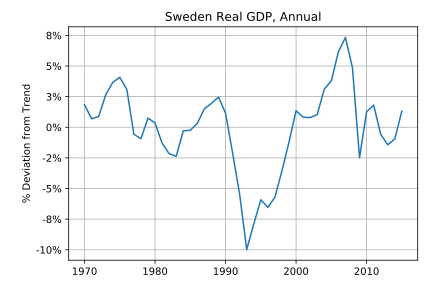
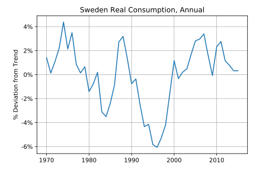
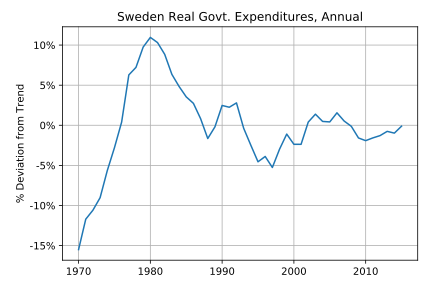
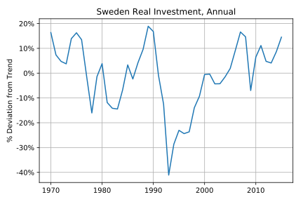
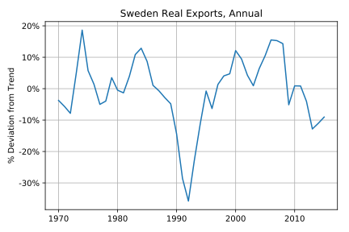
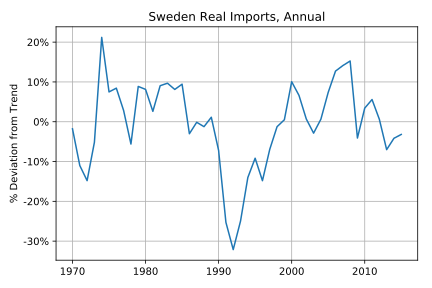
With (data-trend)/trend:
|
Y |
C |
G |
I |
X |
M |
| Standard Deviation: |
0.034208 |
0.025447 |
0.053222 |
0.126888 |
0.103076 |
0.102575 |
| Coorelation with Y component: |
1.000000 |
0.850002 |
-0.051382 |
0.835016 |
0.595563 |
0.673711 |
With (data-trend)/data:
|
Y |
C |
G |
I |
X |
M |
| Standard Deviation: |
0.034859 |
0.025855 |
0.053479 |
0.135075 |
0.109289 |
0.107343 |
| Coorelation with Y component: |
1.000000 |
0.851808 |
-0.043579 |
0.869271 |
0.580305 |
0.679023 |
Australia
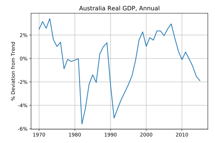
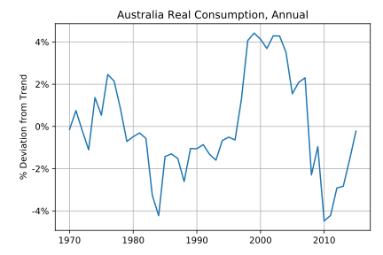
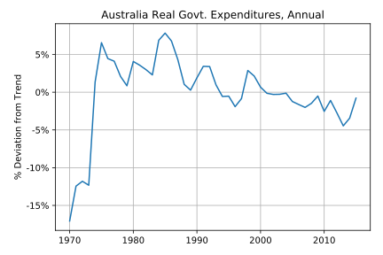
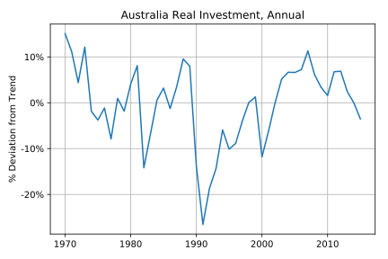
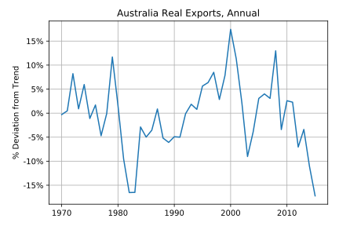
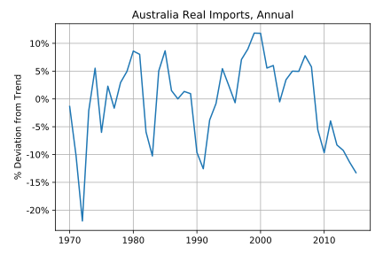
With (data-trend)/trend:
|
Y |
C |
G |
I |
X |
M |
| Standard Deviation: |
0.022314 |
0.023905 |
0.046946 |
0.082519 |
0.074370 |
0.072865 |
| Coorelation with Y component: |
1.000000 |
0.478576 |
-0.466332 |
0.764074 |
0.419903 |
0.289413 |
With (data-trend)/data:
|
Y |
C |
G |
I |
X |
M |
| Standard Deviation: |
0.02262 |
0.023716 |
0.049902 |
0.086326 |
0.074025 |
0.075373 |
| Coorelation with Y component: |
1.00000 |
0.470488 |
-0.459126 |
0.771296 |
0.445182 |
0.280504 |
Mexico
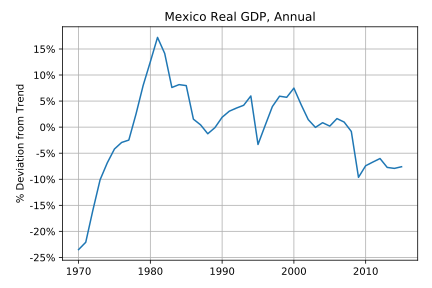
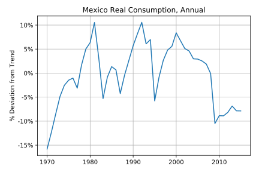
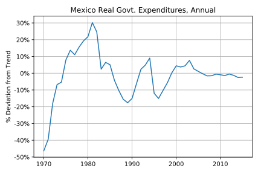
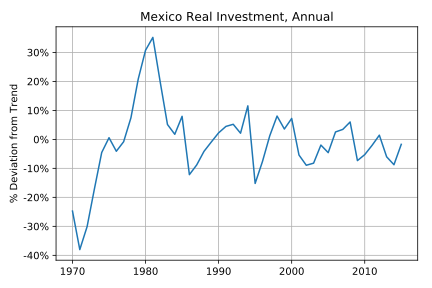
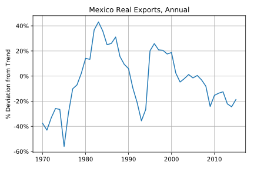
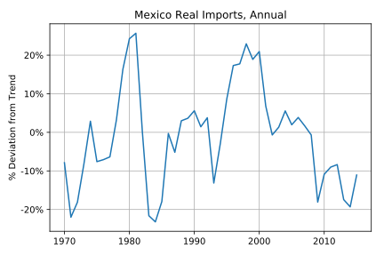
With (data-trend)/trend:
|
Y |
C |
G |
I |
X |
M |
| Standard Deviation: |
0.079175 |
0.062236 |
0.137328 |
0.143828 |
0.254968 |
0.138324 |
| Coorelation with Y component: |
1.000000 |
0.799139 |
0.732612 |
0.838302 |
0.633026 |
0.573893 |
With (data-trend)/data:
|
Y |
C |
G |
I |
X |
M |
| Standard Deviation: |
0.081448 |
0.063385 |
0.138543 |
0.129665 |
0.232614 |
0.129373 |
| Coorelation with Y component: |
1.000000 |
0.826269 |
0.736712 |
0.855890 |
0.677436 |
0.545575 |
Japan
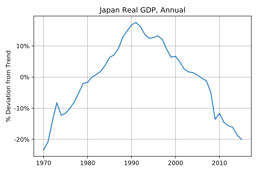
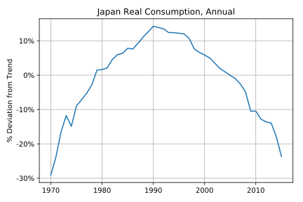
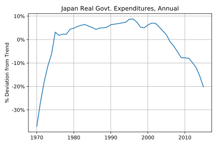
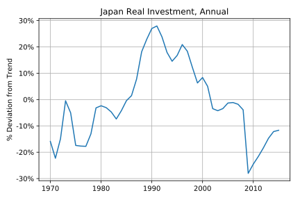
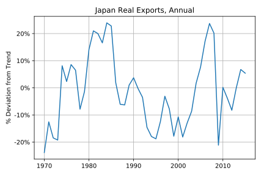
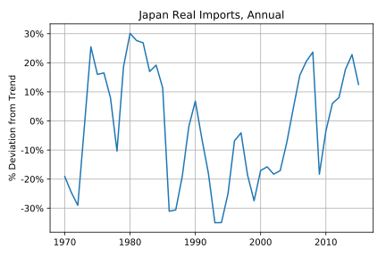
With (data-trend)/trend:
|
Y |
C |
G |
I |
X |
M |
| Standard Deviation: |
0.112949 |
0.107755 |
0.087731 |
0.157744 |
0.142472 |
0.200073 |
| Coorelation with Y component: |
1.000000 |
0.980472 |
0.821684 |
0.925573 |
-0.047554 |
-0.350086 |
With (data-trend)/data:
|
Y |
C |
G |
I |
X |
M |
| Standard Deviation: |
0.113874 |
0.113536 |
0.100966 |
0.145746 |
0.133596 |
0.194193 |
| Coorelation with Y component: |
1.000000 |
0.979465 |
0.836350 |
0.909867 |
0.000124 |
-0.325120 |